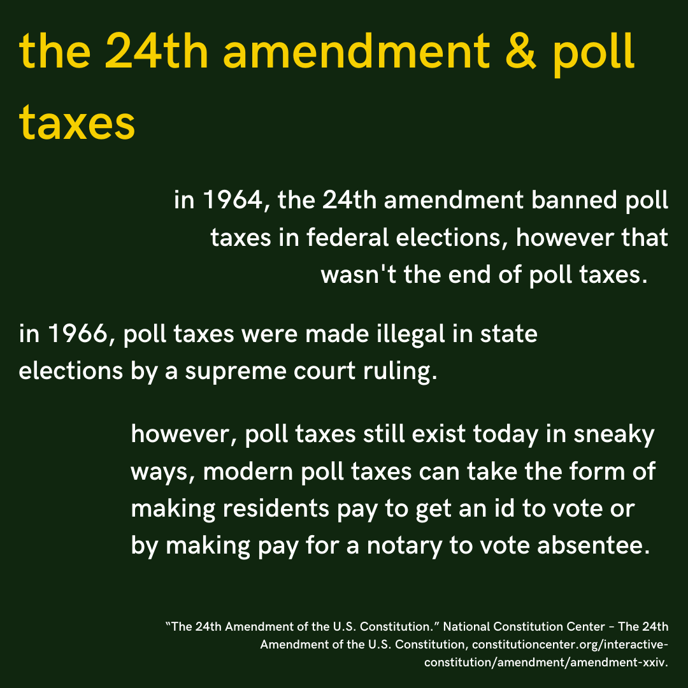
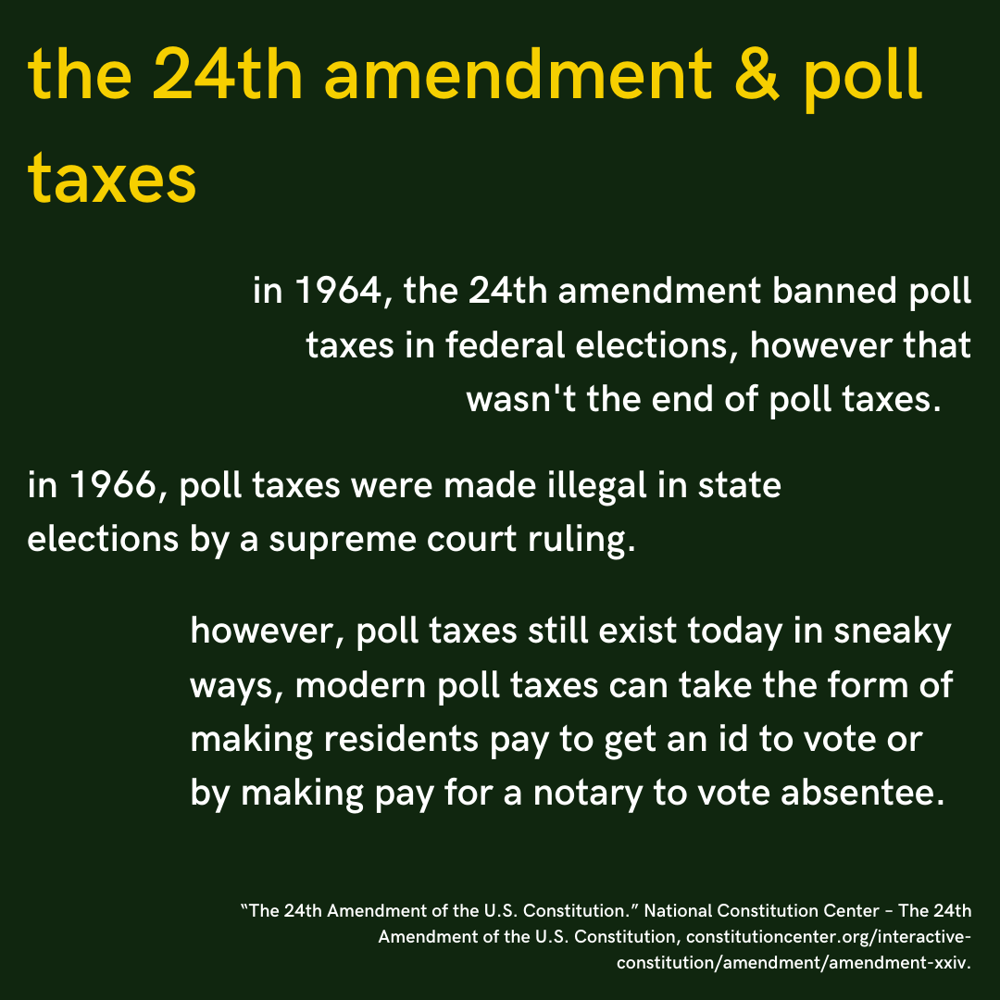

voter suppression is a tactic used to influence the outcome of an election by discouraging or preventing specific groups of people (typically minorities) from voting. tactics range from making voting less convenient to poll taxes to physically intimidating and harming voters.
interestingly enough, in the us, the constitution has no specifications on who can vote; it only specifies who can't have their right to vote taken away (women on the basis of sex, racial minorities on the basis of race, etc.) however, property-owning white men were the only ones who were able to vote at first. after protest, black men were given the right to vote, followed by women, followed by youth (starting at age 18).
jim crow era voter suppression included poll taxes (a fee to vote), literacy tests (tests administered by the government to test how well you could read english), and grandfather clauses (a clause that granted voting rights to those whose grandfathers had voting rights). these laws disproportionately affected racial minorities and low-income people, and kept many people from voting.
aimed to overcome legal barriers at the state and local levels that prevented African Americans from exercising their right to vote. the act was signed into law by president johnson in the aftermath of brutality toward the civil rights protesters at the selma to montgomery march. the act banned the use of literacy tests, provided for federal oversight of voter registration in areas where less than 50 percent of the non-white population had not registered to vote, and authorized the U.S. attorney general to investigate the use of poll taxes in state and local elections.
in 1964, the 24th amendment banned poll taxes in federal elections, however that wasn't the end of poll taxes. in 1966, poll taxes were made illegal in state elections by a supreme court ruling. however, poll taxes still exist today in sneaky ways, modern poll taxes can take the form of making residents pay to get an id to vote or by making pay for a notary to vote absentee.
voter suppression is far from over in the us. in fact, in the 2018 midterm elections, voter registration problems, purging registered voters prior to election, strict voter id and ballot laws, voter confusion due to administrative misinformation, voter intimidation and harassment, poll closures, gerrymandering and malfunctioning voting machines were all reported.
talk to your representatives. flood their inboxes and voicemails with demands to end voter suppression in your state. if you are able to vote, vote those who don't uphold voting rights out. pay attention to redistricting when it does happen, especially if you life in an area where gerrymandering is common. also, get involved with organizations, such as the ACLU who are fighting voter suppression.
however, recognize that voting (even in the us) is an extreme privilege. especially now, with a global pandemic going on, voting will be more unsafe than ever for vulnerable communities. the communities (low income communities and communities of color) most historically affected by voter suppression are also the ones most affected by covid. many states are making absentee voting difficult, which will prevent many people from voting. if you are in a position where you are safe to vote, vote in the interests of those who are not able to and under no circumstance should you shame those who are unable to vote.
here are some premade instagram infographics if you would like to share what you just learned with your following, or even just a few friends. if you post them on social media, please credit me!


 
